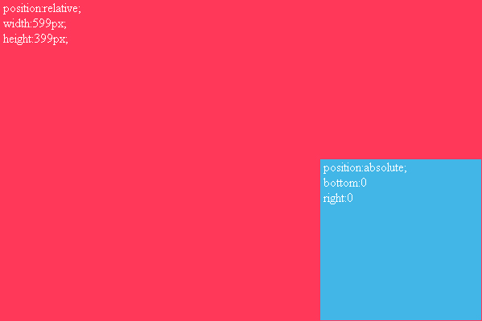

问题描述：
当一个绝对定位元素的父框的宽度或高度为奇数时，该绝对定位元素的bottom与right值会发生一像素的偏差。
demo:
position:relative; width:599px; height:399px;
position:absolute; bottom:0 right:0
IE6下效果
（bottom与right产生1像素偏差）

解决方法：
1.将父框的width与height设置为偶数。2.子元素用left与top定位。